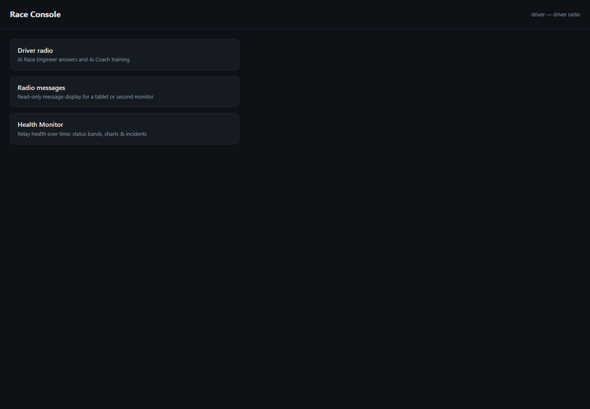
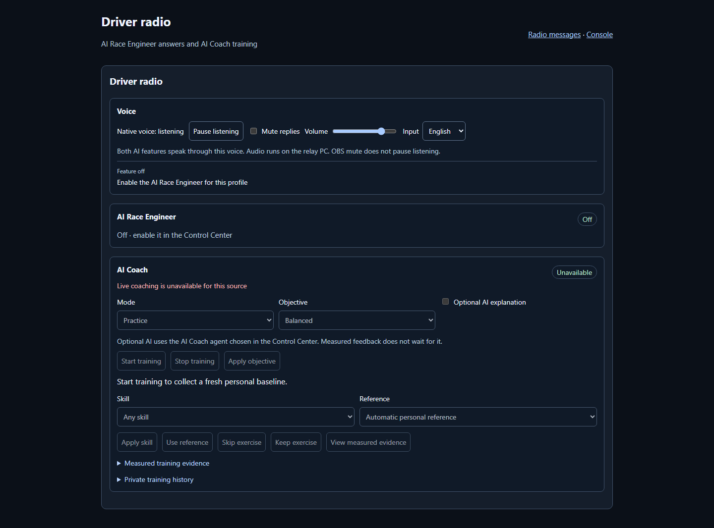
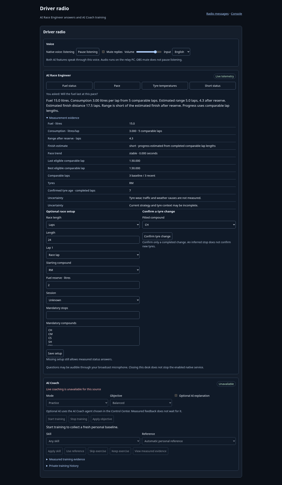
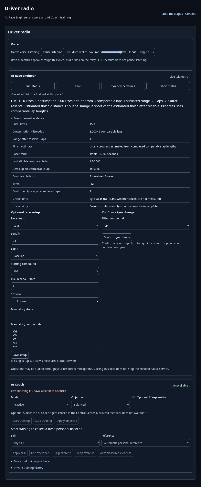
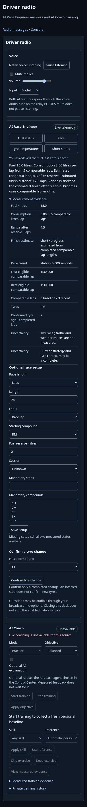

<!doctype html>
<html lang="en">
<head>
<meta charset="utf-8">
<meta name="viewport" content="width=device-width, initial-scale=1">
<link rel="icon" href="favicon.svg" type="image/svg+xml">
<link rel="apple-touch-icon" href="apple-touch-icon.png">
<title>Driver Radio · Onboarding · GT Racing Broadcast</title>
<link rel="stylesheet" href="vendor/reveal/dist/reveal.css">
<link rel="stylesheet" href="vendor/reveal/plugin/highlight/monokai.css">
<link rel="stylesheet" href="assets/deck.css">
</head>
<body data-role="driver-radio">
<div class="reveal"><div class="slides">

<section data-markdown><script type="text/template">
<span class="role-tag">Driver Radio · Onboarding</span>
# Driver radio
Two AI helpers for the driver of a **solo POV** broadcast:

- **AI Race Engineer:** answers on fuel, pace, tyre temperatures and status, plus fuel warnings and pace notices. It runs whenever it is on and telemetry arrives.
- **AI Coach:** personal training, one exercise at a time. Only **Start training** starts it.

Neither is a crew role, and neither is the human **Race Engineer** desk.

Note: Welcome to the driver radio onboarding. A solo POV broadcast has two AI helpers for its driver. The AI Race Engineer answers questions about fuel, pace, tyre temperatures and your status, and it warns you about fuel and tells you about your pace on its own. It runs whenever it is switched on and live telemetry arrives. There is no start button. The AI Coach is personal training with one exercise at a time, and only Start training starts it. Neither of them is a crew role, and neither is the human Race Engineer desk, which is a separate crew role.
</script></section>

<section data-markdown><script type="text/template">
## Getting in
<div style="display:flex;gap:36px;align-items:flex-start">

<div>

- The **producer** switches each feature on in the Control Center.
- Then every signed-in Console shows **Driver radio** and **Radio messages**.
- There is no driver list: anyone signed in to the profile's Console can use an enabled feature.

</div></div>

[Driver radio](https://github.com/jegr78/gt-racing-broadcast/wiki/Driver-Radio#enable-the-features)

Note: The producer switches each feature on in the Control Center, in the Telemetry view of the solo POV profile. While either feature is on, every signed-in Console shows the Driver radio card, which opens the driver desk, and the Radio messages card. There is no driver list. Anyone signed in to this profile's Console can use an enabled feature, whatever their crew role, but the Console sign-in is always required.
</script></section>

<section data-markdown><script type="text/template">
## The driver desk


- **Voice** row: pause listening, mute replies, volume, input language.
- A switched-off feature reads **Off · enable it in the Control Center**. Here the AI Race Engineer is off, the AI Coach still works.

Note: This is the driver desk. At the top sits the Voice row with pause listening, mute replies, the volume and the input language. Below it come the AI Race Engineer section and the AI Coach section. A feature the producer switched off reads Off, enable it in the Control Center. In this picture the AI Race Engineer is off, and the AI Coach section still works.
</script></section>

<section data-markdown><script type="text/template">
## Ask the AI Race Engineer
<div style="display:flex;gap:36px;align-items:flex-start">

<div>

- Four presets: **Fuel status**, **Pace**, **Tyre temperatures**, **Short status**.
- By voice, once the producer enabled it: say the **wake phrase**, then the question. Each question needs the phrase.
- Answers come in English as text. With native voice on, the **relay PC** speaks them.
- **Optional race setup** sharpens finish and strategy answers.

</div></div>

Note: Ask the AI Race Engineer with one of four presets: fuel status, pace, tyre temperatures or short status. When the producer has enabled native voice, you can also ask by voice. Say the wake phrase the producer set up, then your question, and say the wake phrase again for every new question. A short follow up works too. The microphone and the speaker are on the relay PC. The answer is always shown as text in English on the desk, and with native voice on it is also spoken there. The optional race setup on the desk, with the race length, starting compound, fuel reserve and mandatory stops, makes the finish and strategy answers more precise. Without it the measured status answers still work.
</script></section>

<section data-markdown><script type="text/template">
## Train with the AI Coach
1. Pick **Practice** or **Time trial**, and **Balanced**, **Consistency** or **Pace**.
2. Press **Start training**. Calibration counts suitable laps after Start.
3. Work on one exercise. **View measured evidence** shows the reasons behind each review.
4. **Skip exercise** or **Keep exercise** on purpose. **Stop training** ends it.

Closing the browser does not stop training. The **private history** keeps short summaries, not audio or traces.

[Train with the AI Coach](https://github.com/jegr78/gt-racing-broadcast/wiki/Driver-Radio#train-with-the-ai-coach)

Note: To train with the AI Coach, pick a mode, Practice or Time trial, and an objective, Balanced, Consistency or Pace. Then press Start training. Opening the desk alone starts nothing. Calibration counts suitable completed laps after Start. You work on one exercise at a time, and View measured evidence shows the observation and the checks behind each review. Skip an exercise or keep it on purpose. Stop training ends it. Closing the browser does not stop the training, because the relay runs it. The private training history keeps short summaries of what you worked on, and never raw audio, traces or transcripts.
</script></section>

<section>
<section data-markdown><script type="text/template">
## Radio messages on a tablet


Newest first in large type, with source and time. A message dims after 30 seconds, an urgent one after 15. No controls, same sign-in.

Note: Radio messages is a read-only display for a tablet or a second monitor. It lists the messages of the switched-on features, newest first and in large type, each with its source and time. After 30 seconds, or 15 for an urgent one, a message stays listed but dims, because its values may no longer hold. The display has no controls and needs the same Console sign-in as the driver desk.
</script></section>
<section data-markdown><script type="text/template">
## The desk on a tablet and a phone
<div style="display:flex;gap:40px;align-items:flex-start;justify-content:center">


</div>

Same desk, same controls, sized for the screen.

Note: The driver desk itself also runs on a tablet or a phone, with the same Voice row, presets and coach controls sized for the screen.
</script></section>
</section>

<section data-markdown><script type="text/template">
## On the broadcast: HUD slots
- **Race engineer** slot: the current AI Race Engineer message. Never the spoken question.
- **Coach** slot: the latest lap review of the running training, as one line.
- Both start **hidden**. The producer switches **Visible** on per slot in the overlay builder.
- An empty slot hides itself and clears when its message expires or becomes invalid.

[HUD slots](https://github.com/jegr78/gt-racing-broadcast/wiki/Driver-Radio#hud-slots)

Note: The broadcast picture has two text slots. The Race engineer slot shows the current AI Race Engineer message, never the spoken question. The Coach slot shows the latest lap review of the running training as one line. Both start hidden, and nothing reaches the stream until the producer switches Visible on for that slot in the overlay builder. A slot with nothing to show hides itself, and it clears when its message expires or no longer fits the session.
</script></section>

<section data-markdown><script type="text/template">
## Recap
- **AI Race Engineer** runs while enabled. **AI Coach** runs only after **Start training**.
- Console cards **Driver radio** and **Radio messages**, no driver list.
- Presets, or voice with the wake phrase. Audio plays on the relay PC.
- HUD slots stay hidden until the producer shows them.

Voice and speech services are producer setup:
[Enable native voice](https://github.com/jegr78/gt-racing-broadcast/wiki/Driver-Radio#enable-native-voice)

Note: To recap. There are two features. The AI Race Engineer works whenever it is enabled, and the AI Coach only after Start training. You open them from the Driver radio and Radio messages cards on the Console, and there is no driver list. Ask with the presets or by voice with the wake phrase, and the audio plays on the relay PC. The HUD slots stay hidden until the producer shows them. Setting up the voice and the speech services is producer work, and the wiki page linked here describes it.
</script></section>

</div></div>
<script src="vendor/reveal/dist/reveal.js"></script>
<script src="vendor/reveal/plugin/markdown/markdown.js"></script>
<script src="vendor/reveal/plugin/highlight/highlight.js"></script>
<script src="vendor/reveal/plugin/notes/notes.js"></script>
<script src="assets/deck.js"></script>
</body>
</html>
